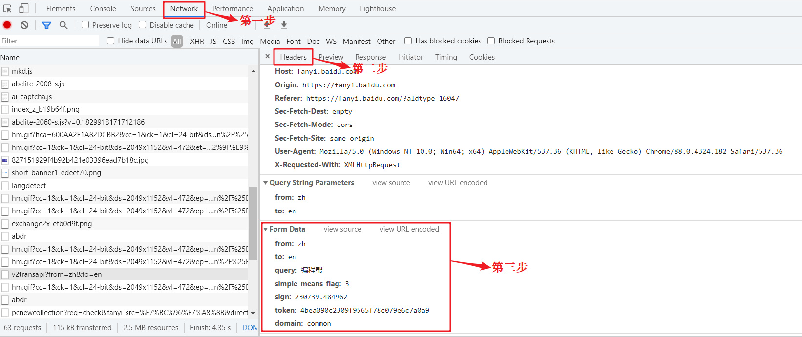
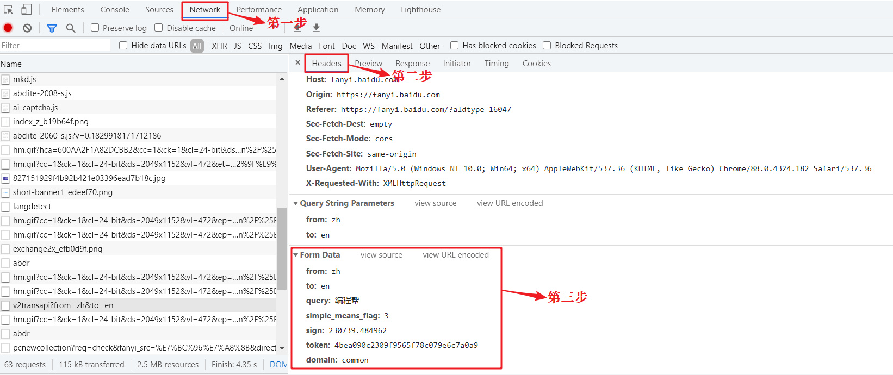

Python Requests库安装和使用
Python 提供了多个用来编写爬虫程序的库，除了前面已经介绍的 urllib 库之外，还有一个很重的 Requests 库，这个库的宗旨是“让 HTTP 服务于人类”。
Requests 是 Python 的第三方库，它的安装非常简便，如下所示：
具体使用示例如下：

使用示例如下所示：
首先打开百度图片（https://image.baidu.com/），并在输入框搜索 “python logo”，然后使用 Chrome 开发者工具查看第一张图片的源地址，即 data-imgurl 所对应的 url 地址，如下所示：

图2：Requests库简单应用
python -m pip install requestsRequests 库是在 urllib 的基础上开发而来，它使用 Python 语言编写，并且采用了 Apache2 Licensed（一种开源协议）的 HTTP 库。与 urllib 相比，Requests 更加方便、快捷，因此在编写爬虫程序时 Requests 库使用较多。
常用请求方法
1) requests.get()
该方法用于 GET 请求，表示向网站发起请求，获取页面响应对象。语法如下：res = requests.get(url,headers=headers,params,timeout)参数说明如下：
- url：要抓取的 url 地址。
- headers：用于包装请求头信息。
- params：请求时携带的查询字符串参数。
- timeout：超时时间，超过时间会抛出异常。
具体使用示例如下：
import requests url = 'http://baidu.com' response = requests.get(url) print(response)输出结果：
<Response [200]>获取带查询字符串参数的响应对象，如下所示：
import requests
data = {
'name': '编程帮',
'url': "www.biancheng.net"
}
response = requests.get('http://httpbin.org/get', params=data)
#直接拼接参数也可以
#response = requests.get(http://httpbin.org/get?name=gemey&age=22)
#调用响应对象text属性，获取文本信息
print(response.text)
输出结果：
{
"args": {
"name": "\u7f16\u7a0b\u5e2e",
"url": "www.biancheng.net"
},
"headers": {
"Accept": "*/*",
"Accept-Encoding": "gzip, deflate",
"Host": "httpbin.org",
"User-Agent": "python-requests/2.23.0",
"X-Amzn-Trace-Id": "Root=1-60420026-236f9205646b68706d0fafa7"
},
"origin": "121.17.25.194",
"url": "http://httpbin.org/get?name=\u7f16\u7a0b\u5e2e&url=www.biancheng.net"
}
2) requests.post()
该方法用于 POST 请求，先由用户向目标 url 提交数据，然后服务器返回一个 HttpResponse 响应对象，语法如下：
response=requests.post(url,data={请求体的字典})
示例如下所示：
import requests
#百度翻译
url = 'https://fanyi.baidu.com'
#post请求体携带的参数，可通过开发者调试工具查看
#查看步骤：NetWork选项->Headers选项->Form Data
data = {'from': 'zh',
'to': 'en',
'query': '编程帮www.biancheng.net你好'
}
response = requests.post(url, data=data)
print(response)
输出结果：
<Response [200]>查看 Form Data 的步骤，如下图所示：

图1：Chrome开发者调试工具（点击看高清图）
对象属性
当我们使用 Requests 模块向一个 URL 发起请求后会返回一个 HttpResponse 响应对象，该对象具有以下常用属性：| 常用属性 | 说明 |
|---|---|
| encoding | 查看或者指定响应字符编码 |
| status_code | 返回HTTP响应码 |
| url | 查看请求的 url 地址 |
| headers | 查看请求头信息 |
| cookies | 查看cookies 信息 |
| text | 以字符串形式输出 |
| content | 以字节流形式输出，若要保存下载图片需使用该属性。 |
使用示例如下所示：
import requests
response = requests.get('http://www.baidu.com')
print(response.encoding)
response.encoding="utf-8" #更改为utf-8编码
print(response.status_code) # 打印状态码
print(response.url) # 打印请求url
print(response.headers) # 打印头信息
print(response.cookies) # 打印cookie信息
print(response.text) #以字符串形式打印网页源码
print(response.content) #以字节流形式打印
输出结果：
#编码格式
ISO-8859-1
#响应码
200
#url地址
http://www.baidu.com/
#请求头信息
{'Cache-Control': 'private, no-cache, no-store, proxy-revalidate, no-transform', 'Connection': 'keep-alive', 'Content-Encoding': 'gzip', 'Content-Type': 'text/html', 'Date': 'Mon, 08 Mar 2021 05:19:33 GMT', 'Last-Modified': 'Mon, 23 Jan 2017 13:27:29 GMT', 'Pragma': 'no-cache', 'Server': 'bfe/1.0.8.18', 'Set-Cookie': 'BDORZ=27315; max-age=86400; domain=.baidu.com; path=/', 'Transfer-Encoding': 'chunked'}
#查看cookies信息
<RequestsCookieJar[<Cookie BDORZ=27315 for .baidu.com/>]>
...内容过长，此处省略后两项输出
Requests库应用
示例应用：使用 Requsets 库下载百度图片。首先打开百度图片（https://image.baidu.com/），并在输入框搜索 “python logo”，然后使用 Chrome 开发者工具查看第一张图片的源地址，即 data-imgurl 所对应的 url 地址，如下所示：
data-imgurl="https://ss2.bdstatic.com/70cFvnSh_Q1YnxGkpoWK1HF6hhy/it/u=38785274,1357847304&fm=26&gp=0.jpg"可以将上述 url 粘贴至浏览器地址栏进行验证。当我们确定图片地址后，就可以使用 requests 库进行编码了：
import requests
url = 'https://ss2.bdstatic.com/70cFvnSh_Q1YnxGkpoWK1HF6hhy/it/u=38785274,1357847304&fm=26&gp=0.jpg'
#简单定义浏览器ua信息
headers = {'User-Agent':'Mozilla/4.0'}
#读取图片需要使用content属性
html = requests.get(url=url,headers=headers).content
#以二进制的方式下载图片
with open('C:/Users/Administrator/Desktop/image/python_logo.jpg','wb') as f:
f.write(html)
最后，您会在桌面文件夹中找到已经下载好的图片，如下所示：图2：Requests库简单应用
关注公众号「站长严长生」，在手机上阅读所有教程，随时随地都能学习。内含一款搜索神器，免费下载全网书籍和视频。

微信扫码关注公众号